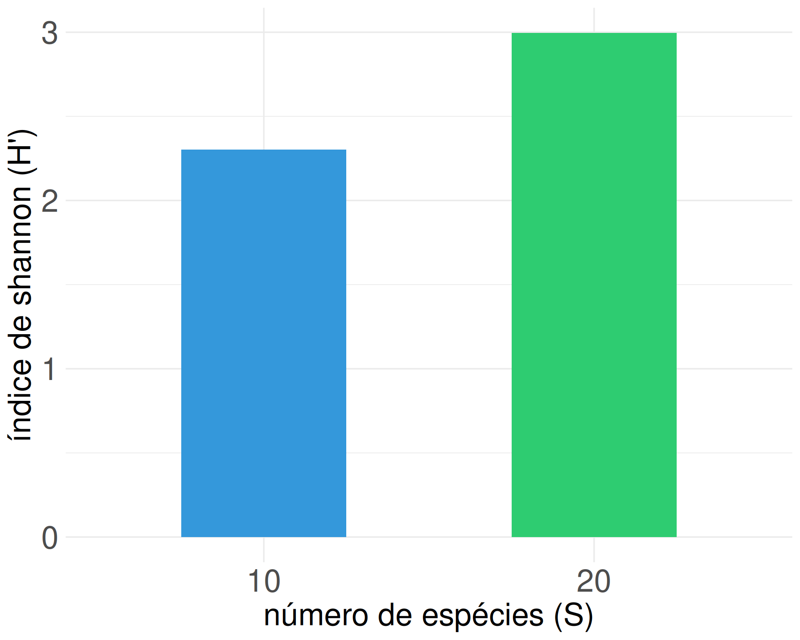
Módulo 5: Diversidade verdadeira e números de hill
Melhorando os índices
A limitação dos índices clássicos de entropia
- shannon (\(H'\)) e simpson (\(1-D\)) não medem a diversidade em unidades de espécies.
- shannon mede a entropia em nats/bits; simpson mede a probabilidade de intersubjetividade.
- ambos possuem comportamento não-linear e assintótico.
- não respeitam o princípio de duplicação
O que é diversidade verdadeira e o princípio de duplicação
- Converte qualquer índice em número efetivo de espécies.
- Representa o número de espécies igualmente abundantes
- Satisfaz o princípio de duplicação
- Restaura a intuição biológica nas comparações entre comunidades.
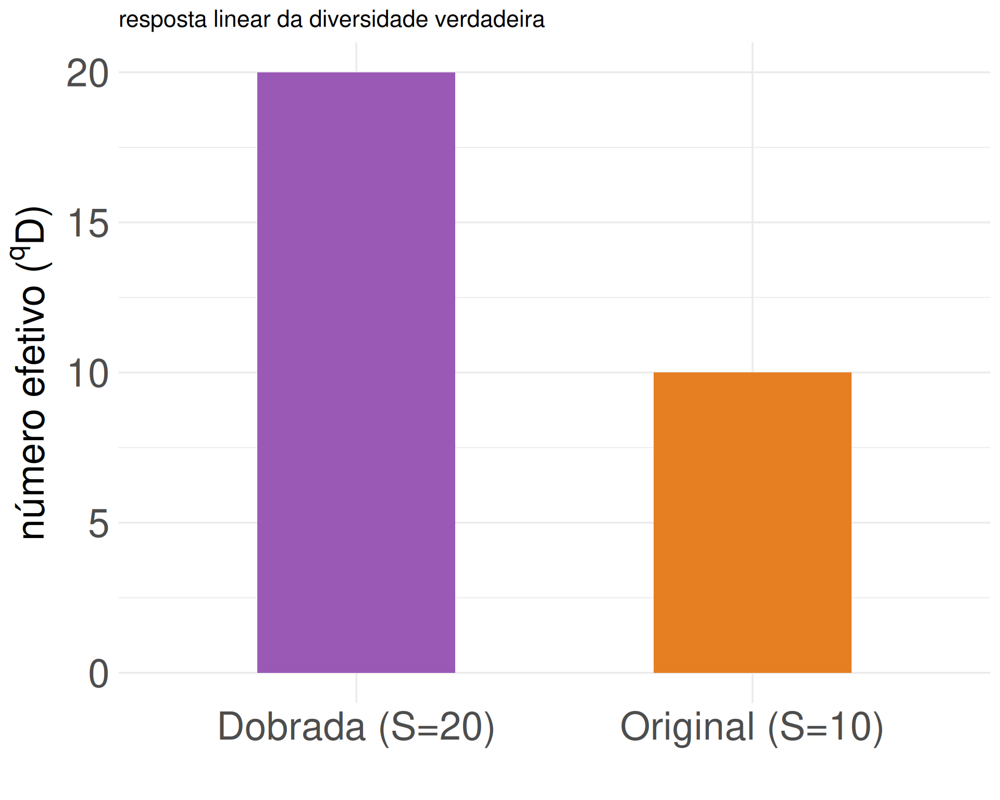
A equação unificada dos números de Hill
- proposta por Mark Hill (1973) e formalizada por lou jost (2006).
- fórmula paramétrica geral: \(^qD = \left( \sum_{i=1}^S p_i^q \right)^{\frac{1}{1-q}}\).
- \(p_i\): proporção de indivíduos da espécie \(i\).
- \(q\): parâmetro de ordem que controla a sensibilidade às abundâncias relativas.
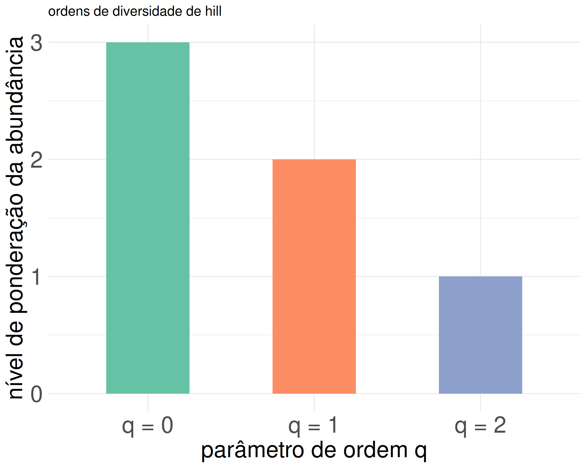
Número de Hill de ordem zero (q = 0): riqueza de espécies
- para \(q = 0\), o expoente anula o efeito da abundância (\(p_i^0 = 1\)).
- fórmula: \(^0D = \sum_{i=1}^S 1 = S\).
- corresponde à riqueza bruta observada na amostragem.
- atribui o mesmo peso a espécies raríssimas e hiperdominantes.
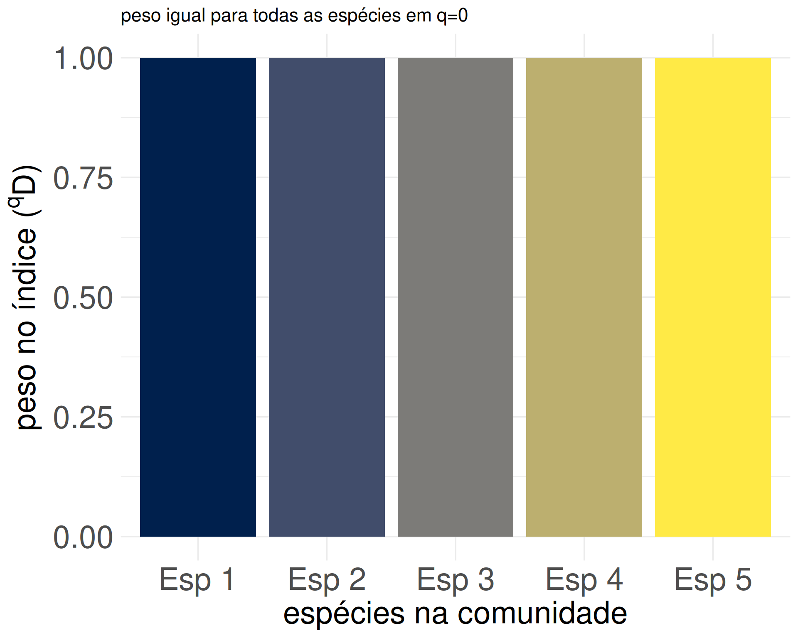
Número de hill de ordem “um” (q = 1): espécies típicas
- limite quando \(q \to 1\): exponencial do índice de shannon-wiener.
- fórmula: \(^1D = \exp\left(-\sum p_i \ln p_i\right)\).
- pondera cada espécie exatamente pela sua abundância relativa.
- representa o número de espécies comuns ou típicas na comunidade.
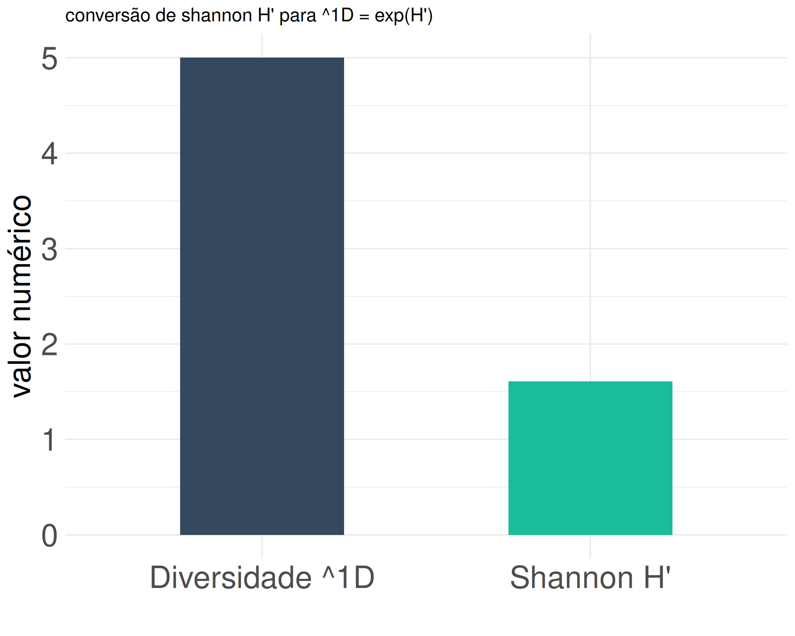
Número de Hill de ordem dois (q = 2): espécies dominantes
- para \(q = 2\), pondera as abundâncias de forma quadrática (\(p_i^2\)).
- fórmula: \(^2D = \frac{1}{\sum p_i^2} = \frac{1}{D}\) (inverso de simpson).
- reduz drasticamente o impacto de espécies raras (singletons).
- representa o número de espécies altamente dominantes no local.
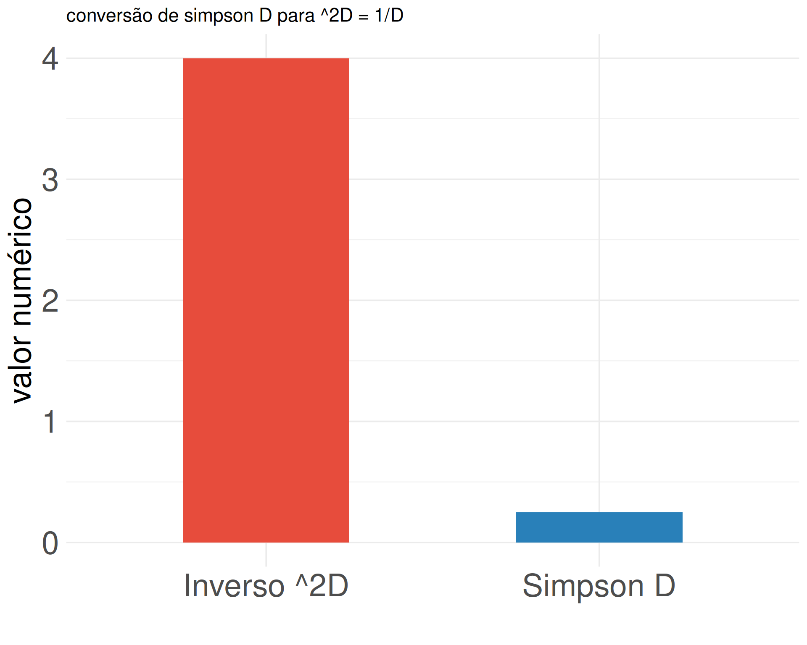
Conversão direta de Shannon e Simpson para números de hill
- riqueza (\(S\)) \(\to ^0D = S\).
- shannon (\(H'\)) \(\to ^1D = \exp(H')\).
- simpson (\(D\)) \(\to ^2D = 1/D\).
- todos os três índices unificados na mesma escala linear de espécies.
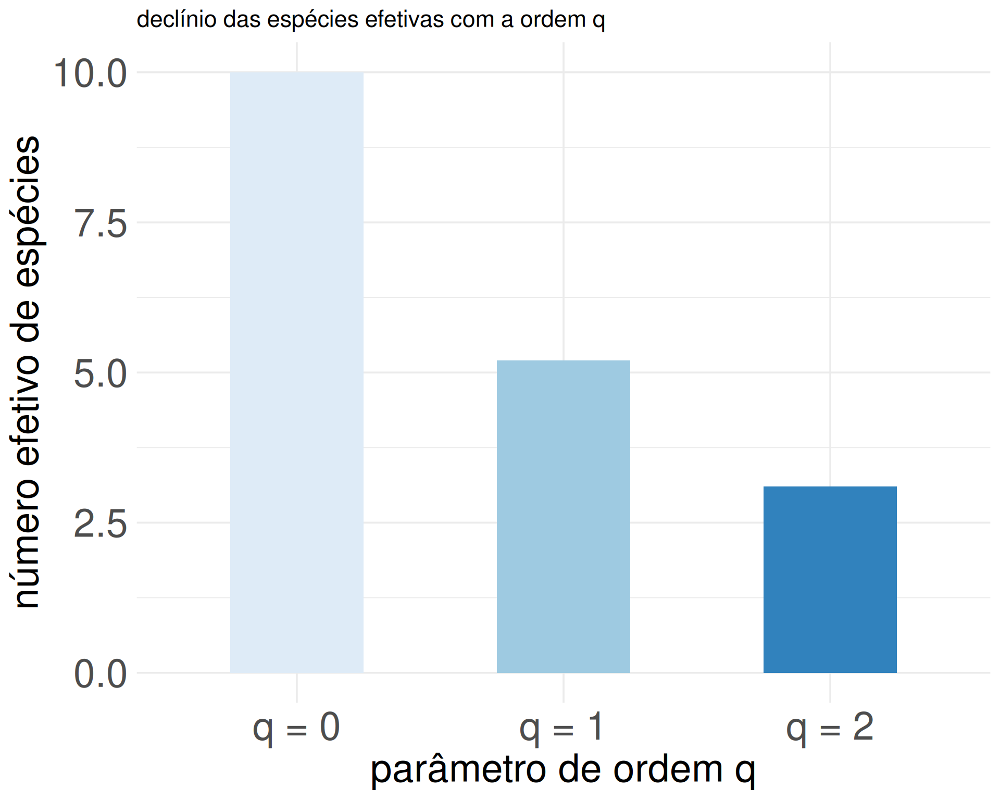
O perfil contínuo de diversidade de hill
- curva contínua calculando \(^qD\) para \(q \in [0, 3]\).
- resume toda a estrutura de abundância da comunidade em um único gráfico.
- elimina a necessidade de escolher arbitrariamente um único índice.
- permite comparar o comportamento de múltiplas comunidades.
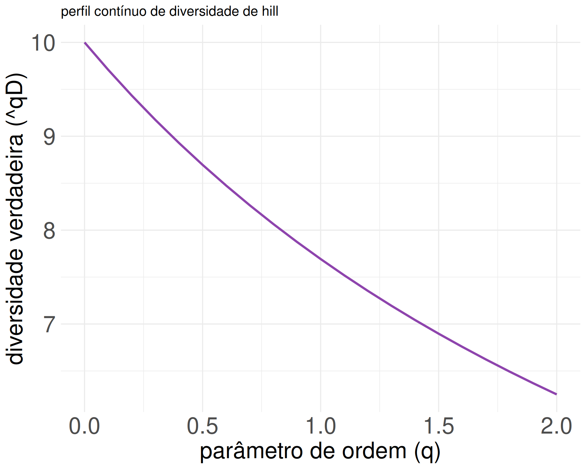
A inclinação do perfil como métrica de equabilidade
- perfil horizontal: equitabilidade perfeita (\(^0D = ^1D = ^2D\)).
- perfil suave: comunidade moderadamente uniforme.
- perfil íngreme (queda acentuada): alta dominância de poucas espécies.
- substitui com vantagens o índice de equitabilidade de pielou (\(J'\)).
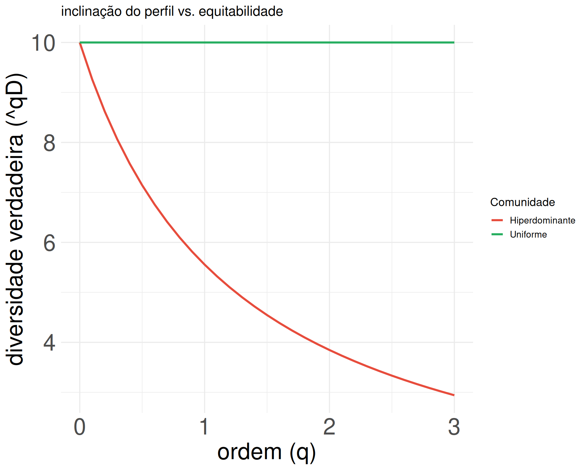
Comparando duas comunidades contrastantes
- comunidade A: 10 espécies, 1 hiperdominante (70% das peças).
- comunidade B: 10 espécies, distribuição perfeitamente uniforme.
- ambas possuem a mesma riqueza (\(^0D = 10\)).
- números de hill revelam a profunda diferença na diversidade efetiva.
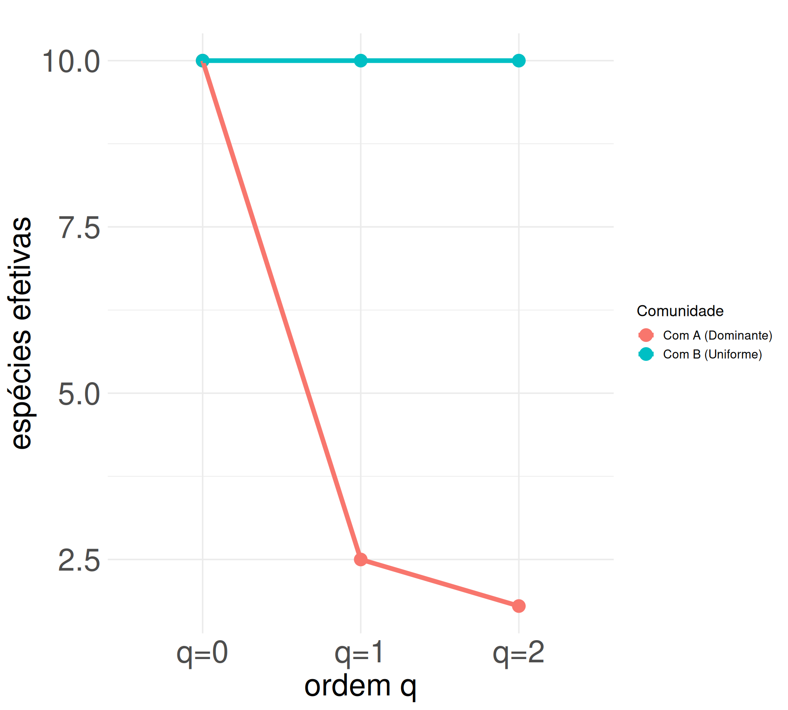
A contradição entre Shannon e Simpson
- índices brutos costumam ranquear comunidades de forma conflitante.
- comunidades com muitas raras inflacionam shannon mas mantêm simpson baixo.
- os números de hill indicam qual ordem está sendo avaliada.
- ordens \(q=0, 1, 2\) fornecem um diagnóstico integrado e coerente.
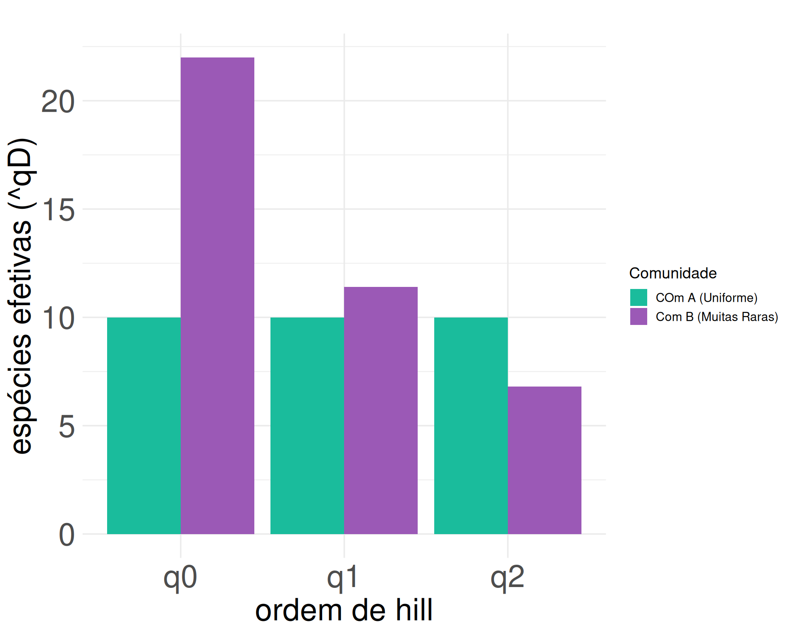
Partição multiplicativa da diversidade alfa, beta e gama
- proposta de whittaker (1960): \(^\gamma D = ^\alpha D \times ^\beta D\).
- rigorosamente válida apenas quando a diversidade é medida em números de hill.
- \(^\alpha D\): diversidade efetiva média por local.
- \(^\gamma D\): diversidade efetiva total da região.
- \(^\beta D = ^\gamma D / ^\alpha D\): turnover em número de comunidades efetivas.
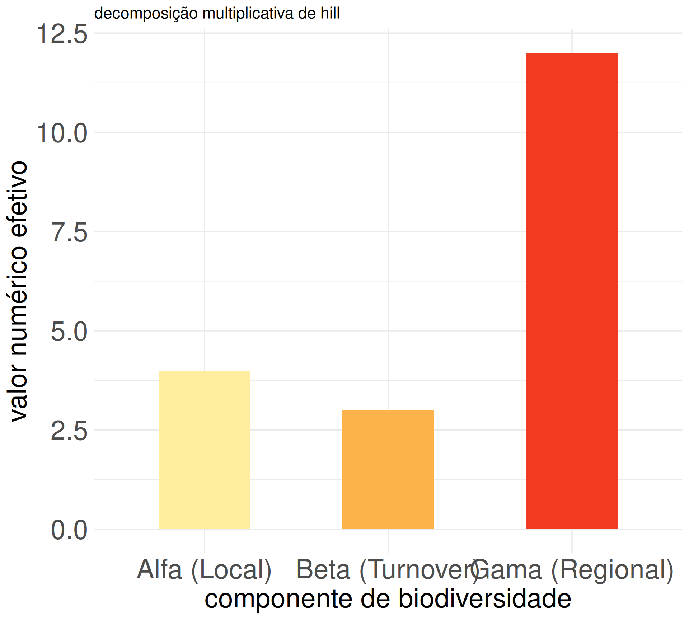
Interpretação biológica da diversidade beta de hill
- \(^\beta D = 1,0\): todas as comunidades são perfeitamente idênticas.
- \(^\beta D = N\): todas as \(N\) comunidades são totalmente distintas (sem espécies compartilhadas).
- métrica independente da riqueza alfa (\(^\alpha D\)).
- facilidade de comunicação para estratégias de conservação de paisagens.
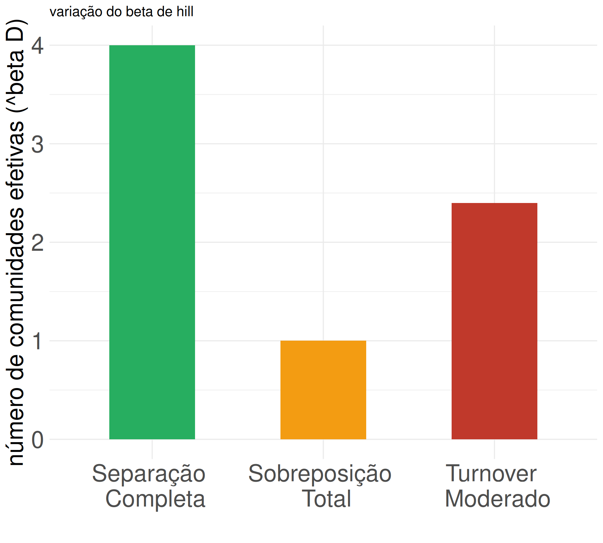